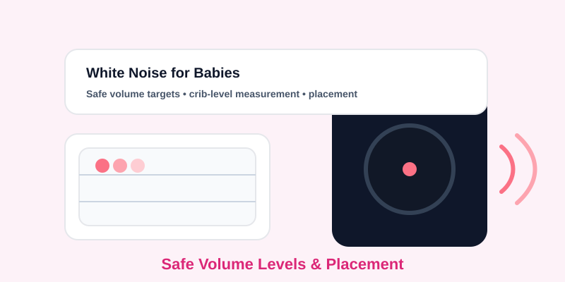

White Noise Machines for Babies: Safe Volume Levels & Placement
Updated Mar 10, 2026 • 7 min read
White noise can be helpful for sleep routines, but volume and placement matter more than the brand. The most common mistake is adjusting noise based on what adults hear across the room. A safer approach is to measure what the baby hears at the crib and aim for a level that supports sleep without becoming an all-night loud exposure.
This article is for informational purposes and does not provide medical advice. If you have concerns about hearing or sleep, consult a pediatrician.
A Practical Target: Quiet at the Crib
Instead of chasing a perfect number, aim for a level that feels like a steady background—not a loud source. A useful practical target is to keep the sound around “quiet conversation or lower” at the crib position. If you see the meter rising toward the range where you would need to raise your voice, reduce volume or increase distance.
The Crib-Level Measurement Method (2 Minutes)
- Measure at crib height: place the device at the mattress height near where the baby’s head rests (or hold it at that height).
- Measure for 60 seconds: record the average reading rather than a quick glance.
- Adjust one variable at a time: change either distance or volume, then re-measure for 60 seconds.
Placement Rules (Simple, High Impact)
- Keep it out of the crib: devices placed inside a crib are almost always too close.
- Prefer distance over volume: if masking is insufficient, first move it farther away and angle it away from the crib, then adjust volume minimally.
- Avoid hard corners: corners can amplify certain frequencies and raise perceived loudness in a small room.
- Don’t aim directly at the baby: indirect placement reduces the “hot spot” effect.
An Important Mindset Shift: Mask Peaks, Don’t Erase the World
Many parents use white noise to erase every sound, which creates a temptation to keep turning it up. A better goal is to reduce sudden peaks (door clicks, footsteps) so the baby doesn’t startle. If you find yourself increasing the volume nightly, treat that as a signal to improve the room: softer door close, felt pads, quieter fan placement, or changing routines.
Timer Strategy: Less Exposure, Same Benefit
If your baby tends to stay asleep after settling, consider using a timer rather than running white noise all night. Even a partial-night approach can preserve the routine benefits while reducing continuous exposure time.
If You’re Unsure, Measure Again
Use a repeatable method. Measure at the same crib position, for the same duration, and record the average. Consistency helps you find the safest settings that still work for your family.